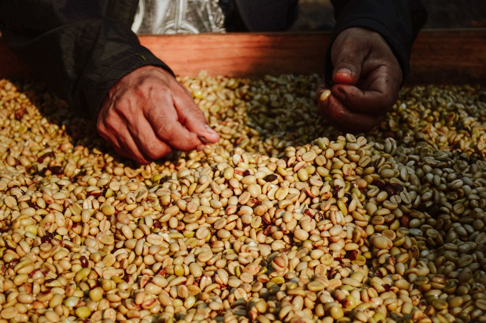
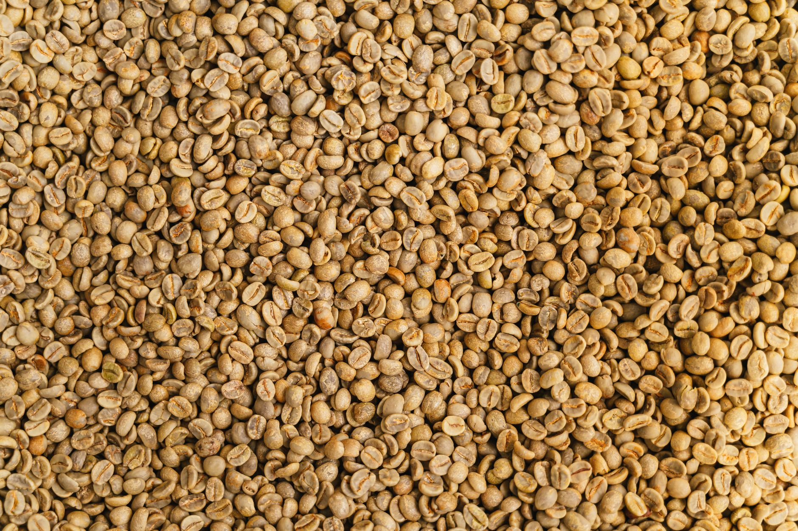
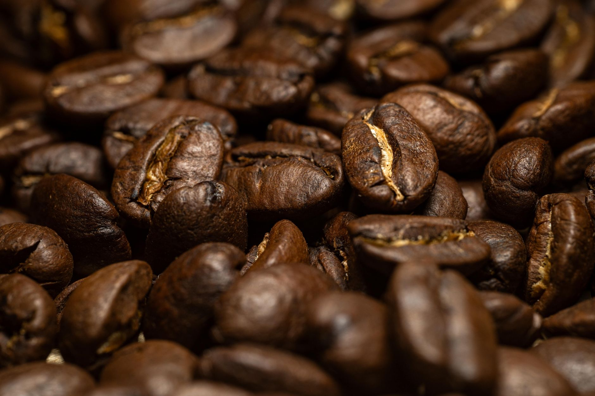
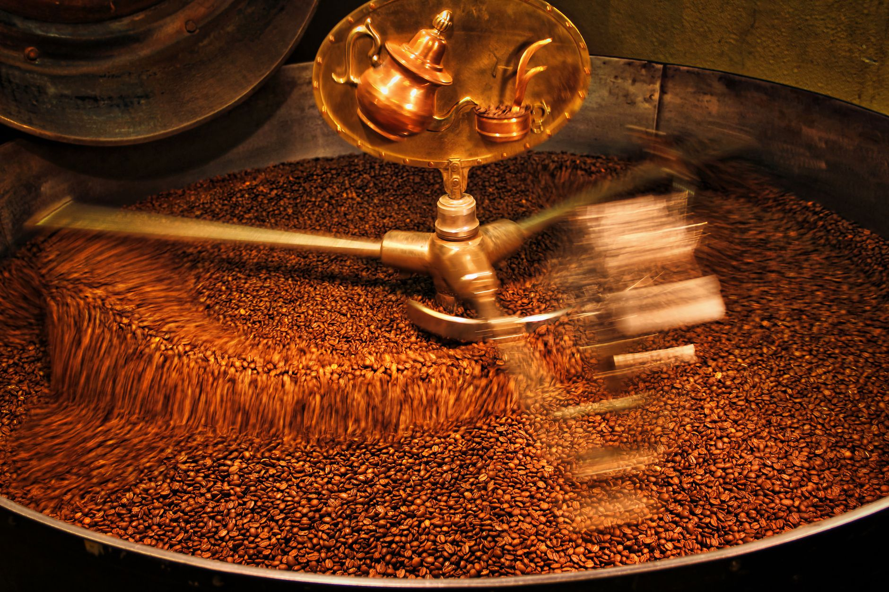

Kaffa, Ethiopia
Washed · heirloom · 1,950 m
Bergamot, white peach, black tea. The lightest thing we roast and the one most likely to change your mind about filter coffee.
$2112 oz · light

W Leigh Street · Scott’s Addition, Richmond Roasting since 2011
Four coffees at a time, ten pounds to a batch, on a drum roaster we run by ear and by thermocouple. The roast log for your bag is printed on the back of it, because you paid for the roast and not just for the bean.
Roast log · batch 4418
Kaffa, Ethiopia · 10 lb
The dip at the start is the bean cooling the drum, not the drum failing. What happens after it — how fast the line rises and how long it stays flat — is the whole argument. Two roasters can hit the same colour on completely different paths, and the cup will tell you which one you are drinking.
We buy in small lots, so a coffee lasts as long as the lot lasts. Nothing here is a permanent blend pretending to taste the same in March and in October.
Washed · heirloom · 1,950 m
Bergamot, white peach, black tea. The lightest thing we roast and the one most likely to change your mind about filter coffee.
Washed · caturra · 1,700 m
Red apple, cane sugar, milk chocolate. The one we hand people who say they do not like fruity coffee, and the one most of them come back for.
Blend · Brazil & Colombia · rotates
Cocoa, toasted almond, dried fig. Built for milk and forgiving of a grinder that has drifted a click since Tuesday.
Washed · SL28 · 1,800 m · 4 bags left
Blackcurrant, tomato leaf, grapefruit. Loud, and not for everybody. When the four bags are gone it will not come back until next season.
A green coffee bean is grassy, dense and almost inedible. Everything you taste in the cup — every one of those notes on the bag — is built by heat, in a window about two minutes wide, and then it is gone and cannot be put back.


This is also why we will not sell you coffee without a roast date. A bag with only a “best before” twelve months out is telling you it does not want you to know when it was roasted.

We deliver Tuesday and Friday inside the city, roasted the day before. No minimum contract and no exclusivity clause — if you want to run somebody else’s single origin next to our espresso, that is a good sign for your customers.
5 lb bags
$12.60
per pound
Leigh Street Espresso and the Colombia. The two that hold up all day on a busy bar.
5 lb bags · most cafés start here
$16.40
per pound
Office · 2 lb bags
$14.80
per pound
Batch-brew grind, delivered whole or ground on the morning it goes out. Filters and a brew ratio card in the first box.
There is no syrup menu. If you want something we do not list, ask — we will make it if we can make it well.
The entrance is on the side, not on Leigh. If you can smell it, you have gone about thirty feet too far.
No, and it is the single most common thing we correct. A darker roast tastes heavier because more of the sugar has caramelised and some has burnt, but it holds slightly less caffeine by weight than a light roast of the same bean. Strength in the cup comes from your dose and your grind, not from the colour of the bean.
Best from three days to three weeks after the roast date on the back. After that it does not go bad, it goes quiet: the aromatics leave first and you are left with body and bitterness. Keep the bag closed, at room temperature, away from the hob. Not the freezer, not the fridge, and not a glass jar on a sunny windowsill.
Gladly, and tell us the brewer — a moka pot and a French press want completely different grinds. But ground coffee stales in days rather than weeks, so if you drink it slowly, buy whole bean and a hand grinder. A twenty-dollar hand grinder improves your coffee more than a two-hundred-dollar machine.
Because we paid very different prices for the green. The Kenya is a small lot bought at auction and it costs us nearly twice what the Colombia costs. We do not average the price across the shelf, because that quietly makes the cheap coffee subsidise the expensive one and hides which is which.
Yes. Mondays and Thursdays, first batch at 7:30 AM, and you should stand where we tell you to because the drum front gets to about four hundred degrees. It takes eleven minutes and you will hear first crack before you see it. No charge, no booking, just turn up.
Some of it, and we say which. The Ethiopia and the Kenya come through an importer we have used for nine years; the Colombia is from a producer we have bought from four seasons running. We will tell you what we paid per pound for the green if you ask — it is on the card next to the bag.